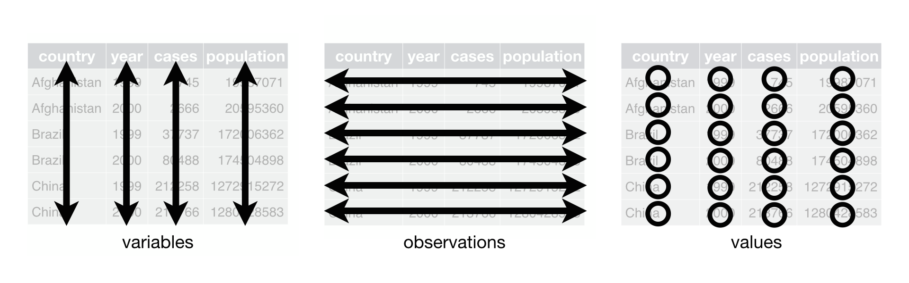
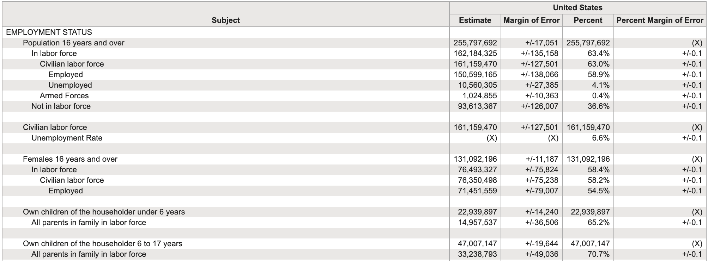
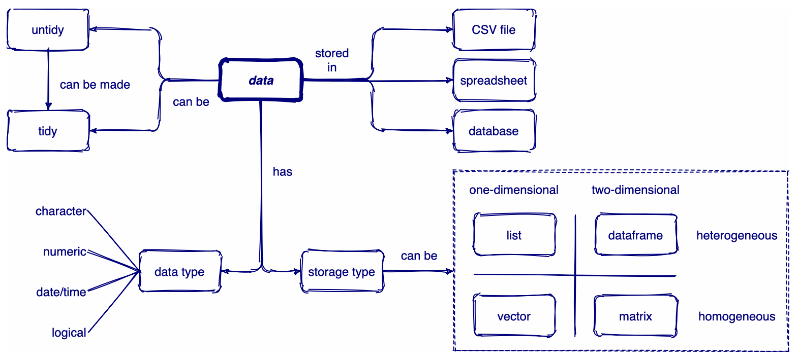
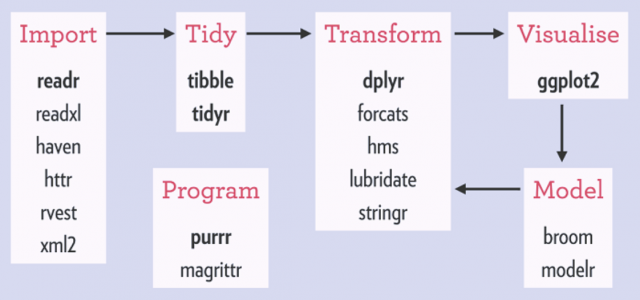
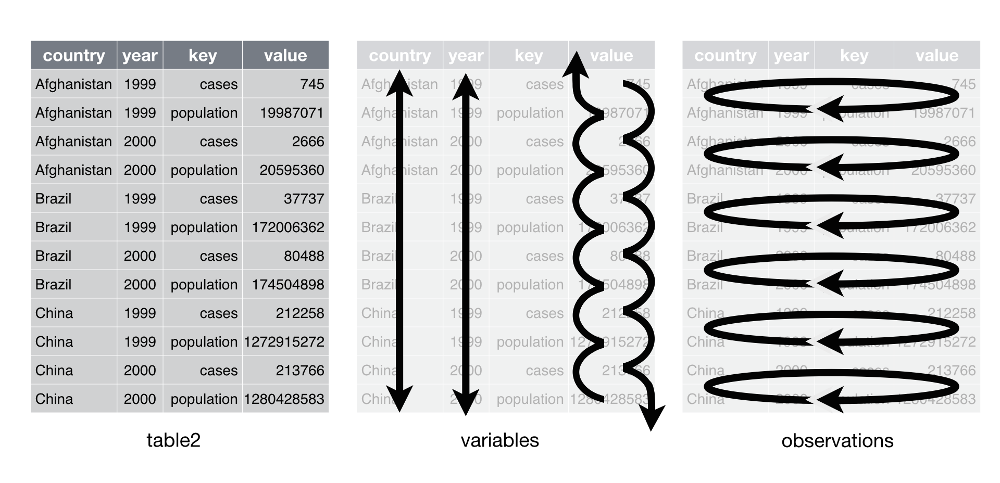
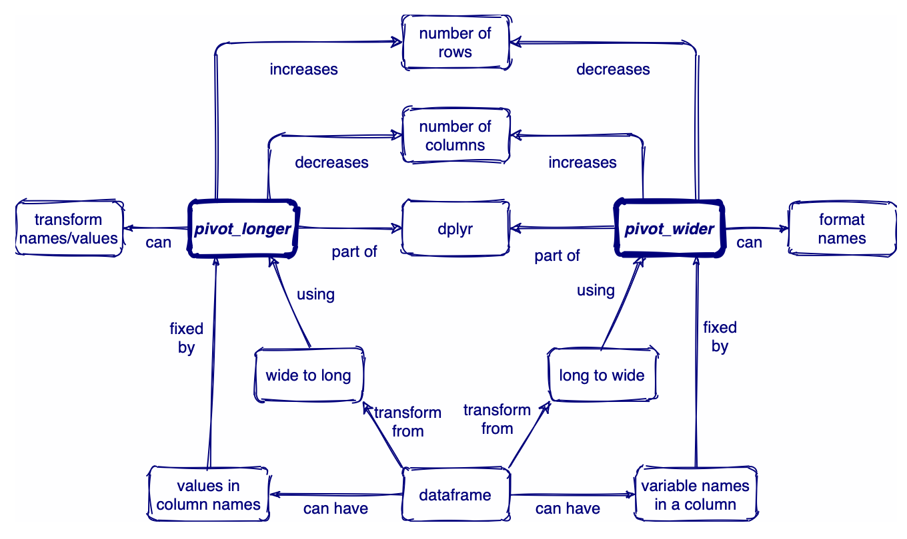
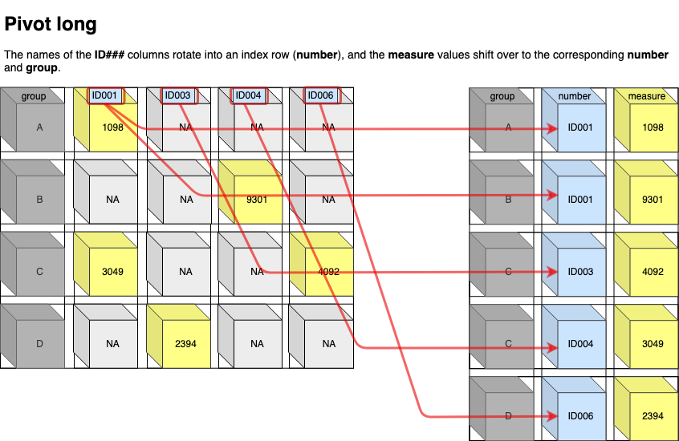
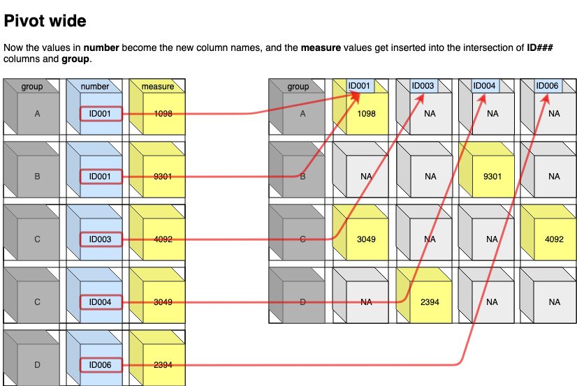

pacman::p_load(
tidyverse, # the tidyverse framework
skimr# quickly providing a broad overview of a data frame
)🗓️ Week 03
Wrangling and Tidying Data
Tidying data
Tidy data
“In the space between chaos and shape, there was another chance.” (C.S. Lewis)
- What makes data tidy:
- Each variable should form a column
- Each observation should form a row
- Each value is a cell; each cell is a single value

Untidy data

Rules for storing tidy data
- Be consistent
- Choose good names for things
- Write dates as YYYY-MM-DD
- No empty cells
- Put just one thing in a cell
- Don’t use font color or highlighting as data
Why your data should be tidy
Opting for a consistent method of data storage offers a broad benefit. When you maintain a uniform data structure, it simplifies the process of mastering tools that interact with it, as they possess a foundational consistency
A distinct advantage of arranging variables in columns is that it leverages R’s vectorized capabilities. As you discovered in the R workshop, the majority of built-in R functions are designed to operate on vectors of values, which enhances the seamless transformation of tidy data
Overview of data

Collection of R packages for tidy data
If dataframes are tidy, it’s easy to transform, visualise, model, and program them using tidyverse packages

Loading required packages
Displaying and summarising data I
There are so many different ways of looking at data in R
str(table1)tibble [6 × 4] (S3: tbl_df/tbl/data.frame)
$ country : chr [1:6] "Afghanistan" "Afghanistan" "Brazil" "Brazil" ...
$ year : num [1:6] 1999 2000 1999 2000 1999 ...
$ cases : num [1:6] 745 2666 37737 80488 212258 ...
$ population: num [1:6] 2.00e+07 2.06e+07 1.72e+08 1.75e+08 1.27e+09 ...glimpse(table1)Rows: 6
Columns: 4
$ country <chr> "Afghanistan", "Afghanistan", "Brazil", "Brazil", "China", …
$ year <dbl> 1999, 2000, 1999, 2000, 1999, 2000
$ cases <dbl> 745, 2666, 37737, 80488, 212258, 213766
$ population <dbl> 19987071, 20595360, 172006362, 174504898, 1272915272, 12804…#skim(table1)Displaying and summarising data II
starwars %>%
select(name, height, mass)# A tibble: 87 × 3
name height mass
<chr> <int> <dbl>
1 Luke Skywalker 172 77
2 C-3PO 167 75
3 R2-D2 96 32
4 Darth Vader 202 136
5 Leia Organa 150 49
6 Owen Lars 178 120
7 Beru Whitesun Lars 165 75
8 R5-D4 97 32
9 Biggs Darklighter 183 84
10 Obi-Wan Kenobi 182 77
# ℹ 77 more rowsstarwars %>%
group_by(gender) %>%
summarize(
avg_height = mean(height, na.rm = TRUE) %>% round(2)
)# A tibble: 3 × 2
gender avg_height
<chr> <dbl>
1 feminine 167.
2 masculine 177.
3 <NA> 175 Reshaping

Pivoting

Pivot long
pivot_longer()increases the number of rows (longer) and decreases the number of columns. The inverse function ispivot_wider()The names of the ID### columns rotate into an index row (number), and the measure values shift over to the corresponding number and group

Pivot longer
table4a# A tibble: 3 × 3
country `1999` `2000`
<chr> <dbl> <dbl>
1 Afghanistan 745 2666
2 Brazil 37737 80488
3 China 212258 213766table4a %>%
pivot_longer(
cols = c("1999", "2000"), # Selected columns
names_to = "year", # Shorter columns (the columns going to be in one column called year)
values_to = "cases"
) # Longer rows (the values are going to be in a separate column called named cases)# A tibble: 6 × 3
country year cases
<chr> <chr> <dbl>
1 Afghanistan 1999 745
2 Afghanistan 2000 2666
3 Brazil 1999 37737
4 Brazil 2000 80488
5 China 1999 212258
6 China 2000 213766Pivot longer (another example)
billboard# A tibble: 317 × 79
artist track date.entered wk1 wk2 wk3 wk4 wk5 wk6 wk7 wk8
<chr> <chr> <date> <dbl> <dbl> <dbl> <dbl> <dbl> <dbl> <dbl> <dbl>
1 2 Pac Baby… 2000-02-26 87 82 72 77 87 94 99 NA
2 2Ge+her The … 2000-09-02 91 87 92 NA NA NA NA NA
3 3 Doors D… Kryp… 2000-04-08 81 70 68 67 66 57 54 53
4 3 Doors D… Loser 2000-10-21 76 76 72 69 67 65 55 59
5 504 Boyz Wobb… 2000-04-15 57 34 25 17 17 31 36 49
6 98^0 Give… 2000-08-19 51 39 34 26 26 19 2 2
7 A*Teens Danc… 2000-07-08 97 97 96 95 100 NA NA NA
8 Aaliyah I Do… 2000-01-29 84 62 51 41 38 35 35 38
9 Aaliyah Try … 2000-03-18 59 53 38 28 21 18 16 14
10 Adams, Yo… Open… 2000-08-26 76 76 74 69 68 67 61 58
# ℹ 307 more rows
# ℹ 68 more variables: wk9 <dbl>, wk10 <dbl>, wk11 <dbl>, wk12 <dbl>,
# wk13 <dbl>, wk14 <dbl>, wk15 <dbl>, wk16 <dbl>, wk17 <dbl>, wk18 <dbl>,
# wk19 <dbl>, wk20 <dbl>, wk21 <dbl>, wk22 <dbl>, wk23 <dbl>, wk24 <dbl>,
# wk25 <dbl>, wk26 <dbl>, wk27 <dbl>, wk28 <dbl>, wk29 <dbl>, wk30 <dbl>,
# wk31 <dbl>, wk32 <dbl>, wk33 <dbl>, wk34 <dbl>, wk35 <dbl>, wk36 <dbl>,
# wk37 <dbl>, wk38 <dbl>, wk39 <dbl>, wk40 <dbl>, wk41 <dbl>, wk42 <dbl>, …Use pivot longer
billboard %>%
pivot_longer(
cols = starts_with("wk"), # Use regular expressions
names_to = "week",
values_to = "rank",
values_drop_na = TRUE # Drop NAs
)# A tibble: 5,307 × 5
artist track date.entered week rank
<chr> <chr> <date> <chr> <dbl>
1 2 Pac Baby Don't Cry (Keep... 2000-02-26 wk1 87
2 2 Pac Baby Don't Cry (Keep... 2000-02-26 wk2 82
3 2 Pac Baby Don't Cry (Keep... 2000-02-26 wk3 72
4 2 Pac Baby Don't Cry (Keep... 2000-02-26 wk4 77
5 2 Pac Baby Don't Cry (Keep... 2000-02-26 wk5 87
6 2 Pac Baby Don't Cry (Keep... 2000-02-26 wk6 94
7 2 Pac Baby Don't Cry (Keep... 2000-02-26 wk7 99
8 2Ge+her The Hardest Part Of ... 2000-09-02 wk1 91
9 2Ge+her The Hardest Part Of ... 2000-09-02 wk2 87
10 2Ge+her The Hardest Part Of ... 2000-09-02 wk3 92
# ℹ 5,297 more rowsPivot wide
Now the values in number become the new column names, and the measure values get inserted into the intersection of ID### columns and group

Use pivot wider
table2# A tibble: 12 × 4
country year type count
<chr> <dbl> <chr> <dbl>
1 Afghanistan 1999 cases 745
2 Afghanistan 1999 population 19987071
3 Afghanistan 2000 cases 2666
4 Afghanistan 2000 population 20595360
5 Brazil 1999 cases 37737
6 Brazil 1999 population 172006362
7 Brazil 2000 cases 80488
8 Brazil 2000 population 174504898
9 China 1999 cases 212258
10 China 1999 population 1272915272
11 China 2000 cases 213766
12 China 2000 population 1280428583table2 %>%
pivot_wider(
names_from = type, # first
values_from = count # second
)# A tibble: 6 × 4
country year cases population
<chr> <dbl> <dbl> <dbl>
1 Afghanistan 1999 745 19987071
2 Afghanistan 2000 2666 20595360
3 Brazil 1999 37737 172006362
4 Brazil 2000 80488 174504898
5 China 1999 212258 1272915272
6 China 2000 213766 1280428583Further challenges (separating)
table3# A tibble: 6 × 3
country year rate
<chr> <dbl> <chr>
1 Afghanistan 1999 745/19987071
2 Afghanistan 2000 2666/20595360
3 Brazil 1999 37737/172006362
4 Brazil 2000 80488/174504898
5 China 1999 212258/1272915272
6 China 2000 213766/1280428583You can specify how to separate joined values
table3 %>%
separate(rate,
into = c("cases", "population"),
sep = "/"
)# A tibble: 6 × 4
country year cases population
<chr> <dbl> <chr> <chr>
1 Afghanistan 1999 745 19987071
2 Afghanistan 2000 2666 20595360
3 Brazil 1999 37737 172006362
4 Brazil 2000 80488 174504898
5 China 1999 212258 1272915272
6 China 2000 213766 1280428583Data wrangling
Grammar of data wrangling
There is a package specifically designed for helping you wrangle your data. This package is called dplyr and will allow you to easily accomplish many of the data wrangling tasks necessary
%>%- pipe operator for chaining a sequence of operations- glimpse() - get an overview of what’s included in dataset
- filter() - filter rows
- select() - select, rename, and reorder columns
- rename() - rename columns
- arrange() - reorder rows
- mutate() - create a new column
- group_by() - group variables
- summarize() - summarize information within a dataset
- left_join() - combine data across data frame
Rearranging data
glimpse(mtcars)Rows: 32
Columns: 11
$ mpg <dbl> 21.0, 21.0, 22.8, 21.4, 18.7, 18.1, 14.3, 24.4, 22.8, 19.2, 17.8,…
$ cyl <dbl> 6, 6, 4, 6, 8, 6, 8, 4, 4, 6, 6, 8, 8, 8, 8, 8, 8, 4, 4, 4, 4, 8,…
$ disp <dbl> 160.0, 160.0, 108.0, 258.0, 360.0, 225.0, 360.0, 146.7, 140.8, 16…
$ hp <dbl> 110, 110, 93, 110, 175, 105, 245, 62, 95, 123, 123, 180, 180, 180…
$ drat <dbl> 3.90, 3.90, 3.85, 3.08, 3.15, 2.76, 3.21, 3.69, 3.92, 3.92, 3.92,…
$ wt <dbl> 2.620, 2.875, 2.320, 3.215, 3.440, 3.460, 3.570, 3.190, 3.150, 3.…
$ qsec <dbl> 16.46, 17.02, 18.61, 19.44, 17.02, 20.22, 15.84, 20.00, 22.90, 18…
$ vs <dbl> 0, 0, 1, 1, 0, 1, 0, 1, 1, 1, 1, 0, 0, 0, 0, 0, 0, 1, 1, 1, 1, 0,…
$ am <dbl> 1, 1, 1, 0, 0, 0, 0, 0, 0, 0, 0, 0, 0, 0, 0, 0, 0, 1, 1, 1, 0, 0,…
$ gear <dbl> 4, 4, 4, 3, 3, 3, 3, 4, 4, 4, 4, 3, 3, 3, 3, 3, 3, 4, 4, 4, 3, 3,…
$ carb <dbl> 4, 4, 1, 1, 2, 1, 4, 2, 2, 4, 4, 3, 3, 3, 4, 4, 4, 1, 2, 1, 1, 2,…dplyr::arrange(mtcars, mpg) # Low to High (default) mpg cyl disp hp drat wt qsec vs am gear carb
Cadillac Fleetwood 10.4 8 472.0 205 2.93 5.250 17.98 0 0 3 4
Lincoln Continental 10.4 8 460.0 215 3.00 5.424 17.82 0 0 3 4
Camaro Z28 13.3 8 350.0 245 3.73 3.840 15.41 0 0 3 4
Duster 360 14.3 8 360.0 245 3.21 3.570 15.84 0 0 3 4
Chrysler Imperial 14.7 8 440.0 230 3.23 5.345 17.42 0 0 3 4
Maserati Bora 15.0 8 301.0 335 3.54 3.570 14.60 0 1 5 8
Merc 450SLC 15.2 8 275.8 180 3.07 3.780 18.00 0 0 3 3
AMC Javelin 15.2 8 304.0 150 3.15 3.435 17.30 0 0 3 2
Dodge Challenger 15.5 8 318.0 150 2.76 3.520 16.87 0 0 3 2
Ford Pantera L 15.8 8 351.0 264 4.22 3.170 14.50 0 1 5 4
Merc 450SE 16.4 8 275.8 180 3.07 4.070 17.40 0 0 3 3
Merc 450SL 17.3 8 275.8 180 3.07 3.730 17.60 0 0 3 3
Merc 280C 17.8 6 167.6 123 3.92 3.440 18.90 1 0 4 4
Valiant 18.1 6 225.0 105 2.76 3.460 20.22 1 0 3 1
Hornet Sportabout 18.7 8 360.0 175 3.15 3.440 17.02 0 0 3 2
Merc 280 19.2 6 167.6 123 3.92 3.440 18.30 1 0 4 4
Pontiac Firebird 19.2 8 400.0 175 3.08 3.845 17.05 0 0 3 2
Ferrari Dino 19.7 6 145.0 175 3.62 2.770 15.50 0 1 5 6
Mazda RX4 21.0 6 160.0 110 3.90 2.620 16.46 0 1 4 4
Mazda RX4 Wag 21.0 6 160.0 110 3.90 2.875 17.02 0 1 4 4
Hornet 4 Drive 21.4 6 258.0 110 3.08 3.215 19.44 1 0 3 1
Volvo 142E 21.4 4 121.0 109 4.11 2.780 18.60 1 1 4 2
Toyota Corona 21.5 4 120.1 97 3.70 2.465 20.01 1 0 3 1
Datsun 710 22.8 4 108.0 93 3.85 2.320 18.61 1 1 4 1
Merc 230 22.8 4 140.8 95 3.92 3.150 22.90 1 0 4 2
Merc 240D 24.4 4 146.7 62 3.69 3.190 20.00 1 0 4 2
Porsche 914-2 26.0 4 120.3 91 4.43 2.140 16.70 0 1 5 2
Fiat X1-9 27.3 4 79.0 66 4.08 1.935 18.90 1 1 4 1
Honda Civic 30.4 4 75.7 52 4.93 1.615 18.52 1 1 4 2
Lotus Europa 30.4 4 95.1 113 3.77 1.513 16.90 1 1 5 2
Fiat 128 32.4 4 78.7 66 4.08 2.200 19.47 1 1 4 1
Toyota Corolla 33.9 4 71.1 65 4.22 1.835 19.90 1 1 4 1#dplyr::arrange(mtcars, desc(mpg)) # High to RowRenaming columns
df <- mtcars %>% rename(milepergalon = mpg)
glimpse(df)Rows: 32
Columns: 11
$ milepergalon <dbl> 21.0, 21.0, 22.8, 21.4, 18.7, 18.1, 14.3, 24.4, 22.8, 19.…
$ cyl <dbl> 6, 6, 4, 6, 8, 6, 8, 4, 4, 6, 6, 8, 8, 8, 8, 8, 8, 4, 4, …
$ disp <dbl> 160.0, 160.0, 108.0, 258.0, 360.0, 225.0, 360.0, 146.7, 1…
$ hp <dbl> 110, 110, 93, 110, 175, 105, 245, 62, 95, 123, 123, 180, …
$ drat <dbl> 3.90, 3.90, 3.85, 3.08, 3.15, 2.76, 3.21, 3.69, 3.92, 3.9…
$ wt <dbl> 2.620, 2.875, 2.320, 3.215, 3.440, 3.460, 3.570, 3.190, 3…
$ qsec <dbl> 16.46, 17.02, 18.61, 19.44, 17.02, 20.22, 15.84, 20.00, 2…
$ vs <dbl> 0, 0, 1, 1, 0, 1, 0, 1, 1, 1, 1, 0, 0, 0, 0, 0, 0, 1, 1, …
$ am <dbl> 1, 1, 1, 0, 0, 0, 0, 0, 0, 0, 0, 0, 0, 0, 0, 0, 0, 1, 1, …
$ gear <dbl> 4, 4, 4, 3, 3, 3, 3, 4, 4, 4, 4, 3, 3, 3, 3, 3, 3, 4, 4, …
$ carb <dbl> 4, 4, 1, 1, 2, 1, 4, 2, 2, 4, 4, 3, 3, 3, 4, 4, 4, 1, 2, …Subsetting observations (row)
Adding single condition:
starwars %>%
dplyr::filter(sex == "female") %>%
arrange(desc(height))# A tibble: 16 × 14
name height mass hair_color skin_color eye_color birth_year sex gender
<chr> <int> <dbl> <chr> <chr> <chr> <dbl> <chr> <chr>
1 Taun We 213 NA none grey black NA fema… femin…
2 Padmé A… 185 45 brown light brown 46 fema… femin…
3 Adi Gal… 184 50 none dark blue NA fema… femin…
4 Ayla Se… 178 55 none blue hazel 48 fema… femin…
5 Shaak Ti 178 57 none red, blue… black NA fema… femin…
6 Luminar… 170 56.2 black yellow blue 58 fema… femin…
7 Zam Wes… 168 55 blonde fair, gre… yellow NA fema… femin…
8 Jocasta… 167 NA white fair blue NA fema… femin…
9 Barriss… 166 50 black yellow blue 40 fema… femin…
10 Beru Wh… 165 75 brown light blue 47 fema… femin…
11 Dormé 165 NA brown light brown NA fema… femin…
12 Shmi Sk… 163 NA black fair brown 72 fema… femin…
13 Leia Or… 150 49 brown light brown 19 fema… femin…
14 Mon Mot… 150 NA auburn fair blue 48 fema… femin…
15 Rey NA NA brown light hazel NA fema… femin…
16 Captain… NA NA none none unknown NA fema… femin…
# ℹ 5 more variables: homeworld <chr>, species <chr>, films <list>,
# vehicles <list>, starships <list>Subsetting observations (row)
Adding multiple condition:
starwars %>%
dplyr::filter(height < 180 & height > 160) # A tibble: 23 × 14
name height mass hair_color skin_color eye_color birth_year sex gender
<chr> <int> <dbl> <chr> <chr> <chr> <dbl> <chr> <chr>
1 Luke Sk… 172 77 blond fair blue 19 male mascu…
2 C-3PO 167 75 <NA> gold yellow 112 none mascu…
3 Owen La… 178 120 brown, gr… light blue 52 male mascu…
4 Beru Wh… 165 75 brown light blue 47 fema… femin…
5 Greedo 173 74 <NA> green black 44 male mascu…
6 Jabba D… 175 1358 <NA> green-tan… orange 600 herm… mascu…
7 Wedge A… 170 77 brown fair hazel 21 male mascu…
8 Palpati… 170 75 grey pale yellow 82 male mascu…
9 Lando C… 177 79 black dark brown 31 male mascu…
10 Lobot 175 79 none light blue 37 male mascu…
# ℹ 13 more rows
# ℹ 5 more variables: homeworld <chr>, species <chr>, films <list>,
# vehicles <list>, starships <list>Further examples
Filter brown and black hair_color
starwars %>%
dplyr::filter(hair_color %in% c("black", "brown"))# A tibble: 31 × 14
name height mass hair_color skin_color eye_color birth_year sex gender
<chr> <int> <dbl> <chr> <chr> <chr> <dbl> <chr> <chr>
1 Leia Or… 150 49 brown light brown 19 fema… femin…
2 Beru Wh… 165 75 brown light blue 47 fema… femin…
3 Biggs D… 183 84 black light brown 24 male mascu…
4 Chewbac… 228 112 brown unknown blue 200 male mascu…
5 Han Solo 180 80 brown fair brown 29 male mascu…
6 Wedge A… 170 77 brown fair hazel 21 male mascu…
7 Jek Ton… 180 110 brown fair blue NA <NA> <NA>
8 Boba Fe… 183 78.2 black fair brown 31.5 male mascu…
9 Lando C… 177 79 black dark brown 31 male mascu…
10 Arvel C… NA NA brown fair brown NA male mascu…
# ℹ 21 more rows
# ℹ 5 more variables: homeworld <chr>, species <chr>, films <list>,
# vehicles <list>, starships <list>Choose row by position
starwars %>%
arrange(desc(height)) %>%
slice(1:6)# A tibble: 6 × 14
name height mass hair_color skin_color eye_color birth_year sex gender
<chr> <int> <dbl> <chr> <chr> <chr> <dbl> <chr> <chr>
1 Yarael P… 264 NA none white yellow NA male mascu…
2 Tarfful 234 136 brown brown blue NA male mascu…
3 Lama Su 229 88 none grey black NA male mascu…
4 Chewbacca 228 112 brown unknown blue 200 male mascu…
5 Roos Tar… 224 82 none grey orange NA male mascu…
6 Grievous 216 159 none brown, wh… green, y… NA male mascu…
# ℹ 5 more variables: homeworld <chr>, species <chr>, films <list>,
# vehicles <list>, starships <list>Subsetting variables (columns)
names(msleep) [1] "name" "genus" "vore" "order" "conservation"
[6] "sleep_total" "sleep_rem" "sleep_cycle" "awake" "brainwt"
[11] "bodywt" # Only numeric
msleep %>%
dplyr::select(where(is.numeric))# A tibble: 83 × 6
sleep_total sleep_rem sleep_cycle awake brainwt bodywt
<dbl> <dbl> <dbl> <dbl> <dbl> <dbl>
1 12.1 NA NA 11.9 NA 50
2 17 1.8 NA 7 0.0155 0.48
3 14.4 2.4 NA 9.6 NA 1.35
4 14.9 2.3 0.133 9.1 0.00029 0.019
5 4 0.7 0.667 20 0.423 600
6 14.4 2.2 0.767 9.6 NA 3.85
7 8.7 1.4 0.383 15.3 NA 20.5
8 7 NA NA 17 NA 0.045
9 10.1 2.9 0.333 13.9 0.07 14
10 3 NA NA 21 0.0982 14.8
# ℹ 73 more rowsSubsetting variables (columns) by their names
msleep %>%
dplyr::select(contains("sleep"))# A tibble: 83 × 3
sleep_total sleep_rem sleep_cycle
<dbl> <dbl> <dbl>
1 12.1 NA NA
2 17 1.8 NA
3 14.4 2.4 NA
4 14.9 2.3 0.133
5 4 0.7 0.667
6 14.4 2.2 0.767
7 8.7 1.4 0.383
8 7 NA NA
9 10.1 2.9 0.333
10 3 NA NA
# ℹ 73 more rowsAdditional tips
Real-world data are usually messier. The janitor package is useful to fix this kind of problem
messy_data <- tibble::tribble(
~"ColNum1", ~"COLNUM2", ~"COL & NUM3",
1, 2, 3
)
messy_data# A tibble: 1 × 3
ColNum1 COLNUM2 `COL & NUM3`
<dbl> <dbl> <dbl>
1 1 2 3pacman::p_load(janitor)
janitor::clean_names(messy_data)# A tibble: 1 × 3
col_num1 colnum2 col_num3
<dbl> <dbl> <dbl>
1 1 2 3Creating new columns
Returning to our msleep dataset, after filtering and re-ordering, we can create a new column with mutate(). Within mutate(), we will calculate the number of minutes each mammal sleeps by multiplying the number of hours each animal sleeps by 60 mins
msleep %>%
filter(order == "Primates", sleep_total > 10) %>%
select(name, sleep_rem, sleep_cycle, sleep_total) %>%
arrange(name) %>%
mutate(sleep_total_min = sleep_total * 60)# A tibble: 5 × 5
name sleep_rem sleep_cycle sleep_total sleep_total_min
<chr> <dbl> <dbl> <dbl> <dbl>
1 Macaque 1.2 0.75 10.1 606
2 Owl monkey 1.8 NA 17 1020
3 Patas monkey 1.1 NA 10.9 654
4 Potto NA NA 11 660
5 Slow loris NA NA 11 660Summarising exercise
tablea <- msleep %>%
group_by(order) %>%
summarise(
n = n(),
mean_sleep = mean(sleep_total),
sd_sleep = sd(sleep_total)
)
tablea# A tibble: 19 × 4
order n mean_sleep sd_sleep
<chr> <int> <dbl> <dbl>
1 Afrosoricida 1 15.6 NA
2 Artiodactyla 6 4.52 2.51
3 Carnivora 12 10.1 3.50
4 Cetacea 3 4.5 1.57
5 Chiroptera 2 19.8 0.141
6 Cingulata 2 17.8 0.495
7 Didelphimorphia 2 18.7 0.990
8 Diprotodontia 2 12.4 1.84
9 Erinaceomorpha 2 10.2 0.141
10 Hyracoidea 3 5.67 0.551
11 Lagomorpha 1 8.4 NA
12 Monotremata 1 8.6 NA
13 Perissodactyla 3 3.47 0.814
14 Pilosa 1 14.4 NA
15 Primates 12 10.5 2.21
16 Proboscidea 2 3.6 0.424
17 Rodentia 22 12.5 2.81
18 Scandentia 1 8.9 NA
19 Soricomorpha 5 11.1 2.70 Producing tables
pacman::p_load(
kableExtra,
flextable
)
# For HTML and LaTeX
tablea %>% kableExtra::kable()| order | n | mean_sleep | sd_sleep |
|---|---|---|---|
| Afrosoricida | 1 | 15.600000 | NA |
| Artiodactyla | 6 | 4.516667 | 2.5119050 |
| Carnivora | 12 | 10.116667 | 3.5021638 |
| Cetacea | 3 | 4.500000 | 1.5716234 |
| Chiroptera | 2 | 19.800000 | 0.1414214 |
| Cingulata | 2 | 17.750000 | 0.4949747 |
| Didelphimorphia | 2 | 18.700000 | 0.9899495 |
| Diprotodontia | 2 | 12.400000 | 1.8384776 |
| Erinaceomorpha | 2 | 10.200000 | 0.1414214 |
| Hyracoidea | 3 | 5.666667 | 0.5507571 |
| Lagomorpha | 1 | 8.400000 | NA |
| Monotremata | 1 | 8.600000 | NA |
| Perissodactyla | 3 | 3.466667 | 0.8144528 |
| Pilosa | 1 | 14.400000 | NA |
| Primates | 12 | 10.500000 | 2.2098951 |
| Proboscidea | 2 | 3.600000 | 0.4242641 |
| Rodentia | 22 | 12.468182 | 2.8132994 |
| Scandentia | 1 | 8.900000 | NA |
| Soricomorpha | 5 | 11.100000 | 2.7046257 |
Grouped summaries
msleep %>%
group_by(order) %>%
summarise(mean_sleep = mean(sleep_total))# A tibble: 19 × 2
order mean_sleep
<chr> <dbl>
1 Afrosoricida 15.6
2 Artiodactyla 4.52
3 Carnivora 10.1
4 Cetacea 4.5
5 Chiroptera 19.8
6 Cingulata 17.8
7 Didelphimorphia 18.7
8 Diprotodontia 12.4
9 Erinaceomorpha 10.2
10 Hyracoidea 5.67
11 Lagomorpha 8.4
12 Monotremata 8.6
13 Perissodactyla 3.47
14 Pilosa 14.4
15 Primates 10.5
16 Proboscidea 3.6
17 Rodentia 12.5
18 Scandentia 8.9
19 Soricomorpha 11.1 Combining Data Across Data Frames
There is often information stored in several separate data frames that you’ll want in a single data frame. There are many different ways to join separate data frames. Here, we’ll demonstrate how left_join() function works
#create data frame
df1 <- data.frame(a = c('a', 'b', 'c', 'd', 'e', 'f'),
b = c(12, 14, 14, 18, 22, 23))
df2 <- data.frame(a = c('a', 'a', 'a', 'b', 'b', 'b'),
c = c(23, 24, 33, 34, 37, 41))
df3 <- data.frame(a = c('d', 'e', 'f', 'g', 'h', 'i'),
d = c(23, 24, 33, 34, 37, 41))
combined_data <- df1 %>%
left_join(df2, by='a') %>%
left_join(df3, by='a')
combined_data a b c d
1 a 12 23 NA
2 a 12 24 NA
3 a 12 33 NA
4 b 14 34 NA
5 b 14 37 NA
6 b 14 41 NA
7 c 14 NA NA
8 d 18 NA 23
9 e 22 NA 24
10 f 23 NA 33Lab exercise
Problem set:
Import the dataset called “Natural disasters (EMDAT)”: This data has been aggregated by Our World in Data by country and year based on the raw database of disasters published by EM-DAT, CRED / UCLouvain, Brussels, Belgium
Create a new public repository for the project (e.g. README.md, scripts)
Inspect the data briefly and identify its structure
Select the variables that capture the information related to deaths, injuries, homelessness caused by all disasters. You can rename the variables
Create three tables showing the highest averages of deaths, injuries, and homelessness (e.g. top 10)
Create a new binary variable in the original dataset to show whether the number of deaths by all disasters is higher than 500 in a given year
Reshape the dataset (selected version) and save it as a separate dataset in your repository